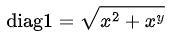
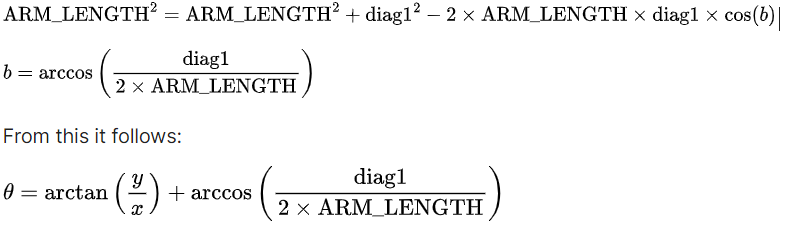
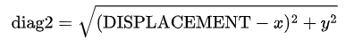
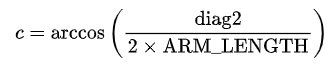

Overview of Puckinator Software Systems
First, OpenCV transforms the frames from the camera to correct any distortion. The puck’s location is determined once this transformation is complete. The puck’s movement is tracked by predict_trajectory, which finds the optimal position for the striker to move to and the velocity vector of the puck. The stepper motor angles necessary for the striker to reach the position are calculated by coordinate_converter(). In the main loop, the optimal position and velocity vector are visualized on top of the OpenCV transformation and the angles are sent over serial to the firmware.
Camera Capture:
Our camera provides a 640x400 monochrome video stream in the MJPG format. We use the
imutils.video module to put the OpenCV video stream on a separate thread. This allows
us to avoid using the blocking stream.read() function on the main thread that also is
responsible for trajectory prediction and sending commands to the Arduino.
Perspective Correction and Calibration:
When the program starts, the camera view is approximately centered on the air hockey table, but
there is some perspective distortion. To find the location of the puck with relation to the table,
we need to perspective correct and crop the frame to the corners of the table. The corners are
marked with ArUco markers and their positions are identified through the cv.aruco
module. For each marker, we define a desired position within the transformed frame. Those positions
correspond to the actual dimensions of the air hockey table (multiplied by the
PIXELS_PER_INCH constant). The detected corners (from the ArUco markers) and desired
corners are passed into the cv.getPerspectiveTransform() function which calculates the
transformation matrix between the distorted webcam frame and the desired points.
On each new webcam frame, we call cv.warpPerspective() with the calculated
transformation matrix to transform and crop the incoming image.
In our main loop, we track the puck’s coordinate and timestamp at every frame and store it in an
instance of the dataclass TimestampedPos , which has member variables x, y, and
timestamp. In a while loop, we continually create new instances of TimestampedPos at
every new frame, making sure to store one past instance of TimestampedPos each time.
Pictured above is an abstracted diagram of our five bar linkage. Point S represents the center of the striker, while sides A through D represent the arms of the linkage. (0, 0) in the inverse kinematics coordinate frame is the center of the left stepper motor shaft, while (0, 0) in the OpenCV coordinate frame is the upper left corner of the upper left ArUco Marker affixed to the table. Angles theta and phi represent the required angles of our two stepper motors to move the striker to point S.
Coordinate Conversion:
In the file puckinator.py, a separate function
predict_trajectory()
determines the
desired
OpenCV y-position of the striker based on the behavior of the puck. The OpenCV x-position of
the striker is set as a constant at all times, meaning the striker should only move side to
side along the defined x-position.
The function coordinate_converter() takes in a point in the inverse kinematics
coordinate frame and outputs the angles theta and phi required to move the striker to
that
point. In every
other function we only use the OpenCV coordinate frame. To convert from the OpenCV coordinate
found by predict trajectory() to the inverse kinematics coordinate frame, we add
Y_OFFSET
to the inverse kinematics y-value and feed it into the coordinate converter as the x-position,
because the x and y axes are switched. Similarly, we add X_OFFSET to the desired
inverse
kinematics x-value and feed it as the y-position.
Rectangular to Angular:
Theta:

The bottom angle of isosceles triangle, which I will call angle b, is defined by sides A, B
and
diag1.
Realizing that A and B are both ARM_LENGTH, the law of cosines therefore states:

Phi:

Angle c of the isosceles triangle defined by C, D, and
diag2 can also be defined by law of cosines:

From this it follows:
These equations apply for when x > 0. However in the code implementation, we used the numpy
function
arctan2 so that the angle contributions of the two triangles defined by x, y and
diag1 and by x, y,
and diag 2 respectively would continue to function when point S had a negative x value. When the
x
value of the striker becomes negative, the right triangles mentioned previously flip vertically.
For
this reason, the arctangent calculation must be subtracted by 90 to get the new desired angle
contribution. arctan2() does this automatically, hence its inclusion in the
arctangent calculations
within coordinate_converter(). For cases in which x = 0, we simply set x = 0.001 to
avoid zero
division errors.